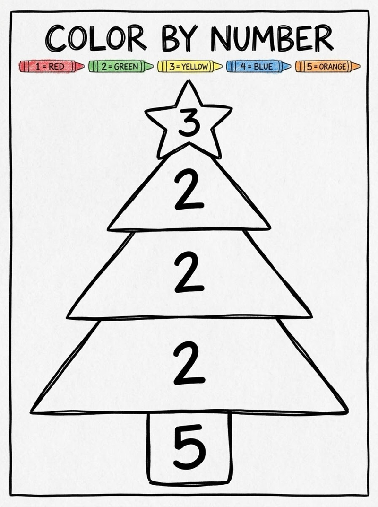
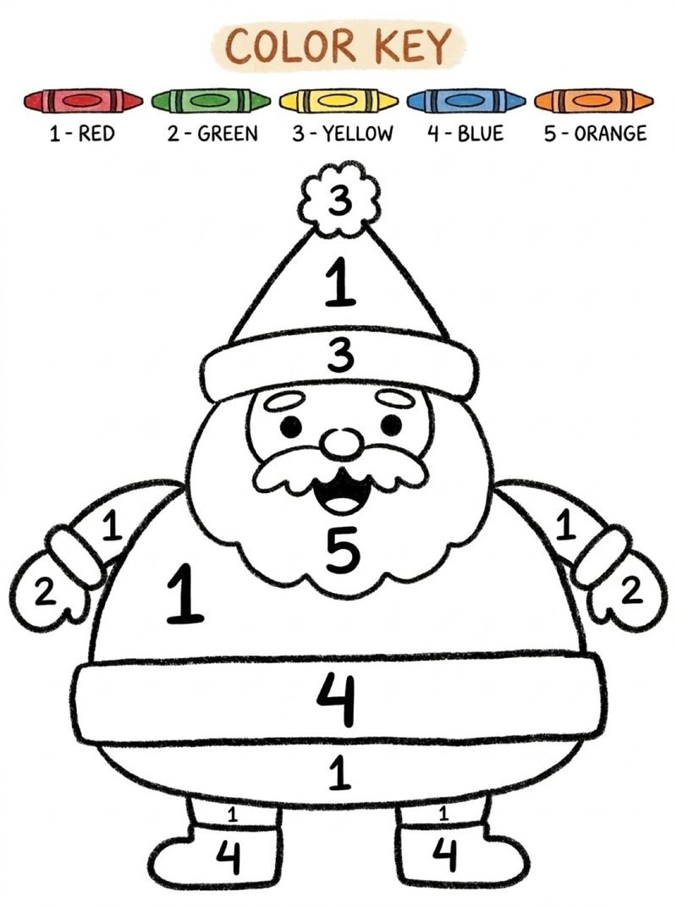
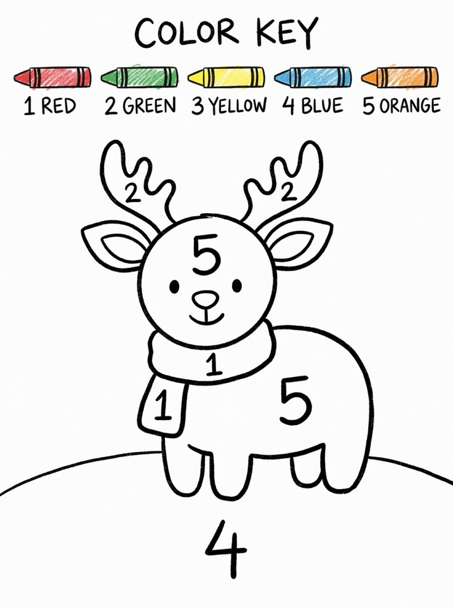
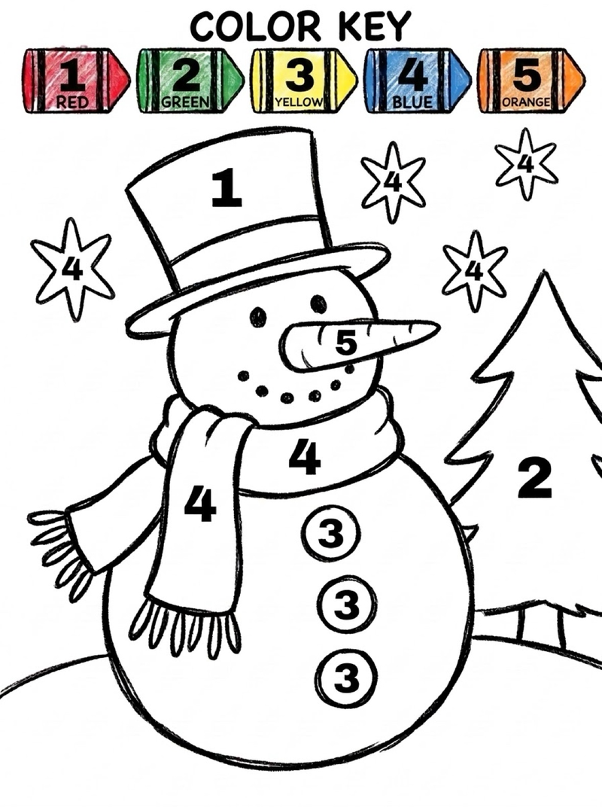
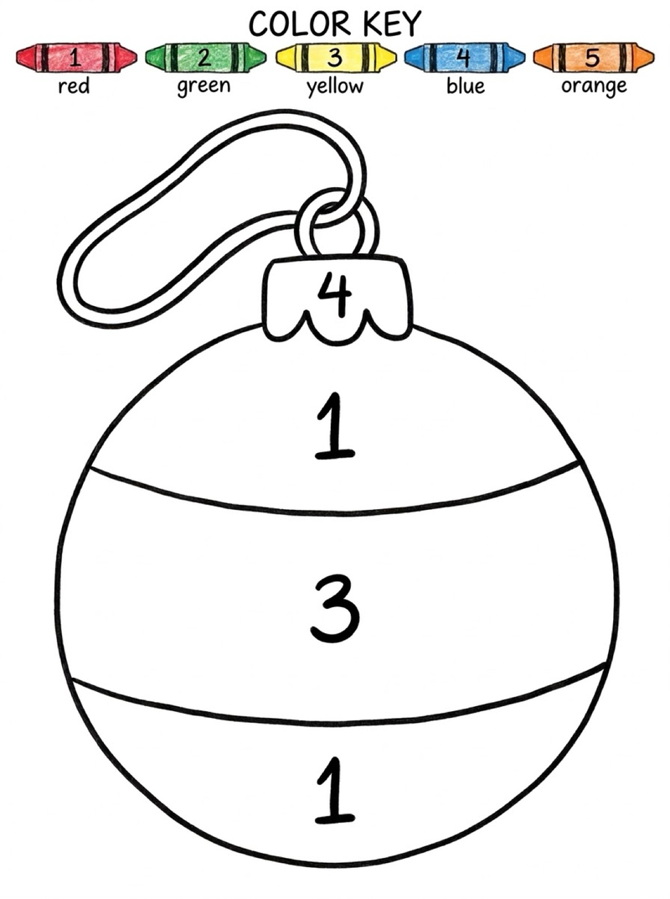
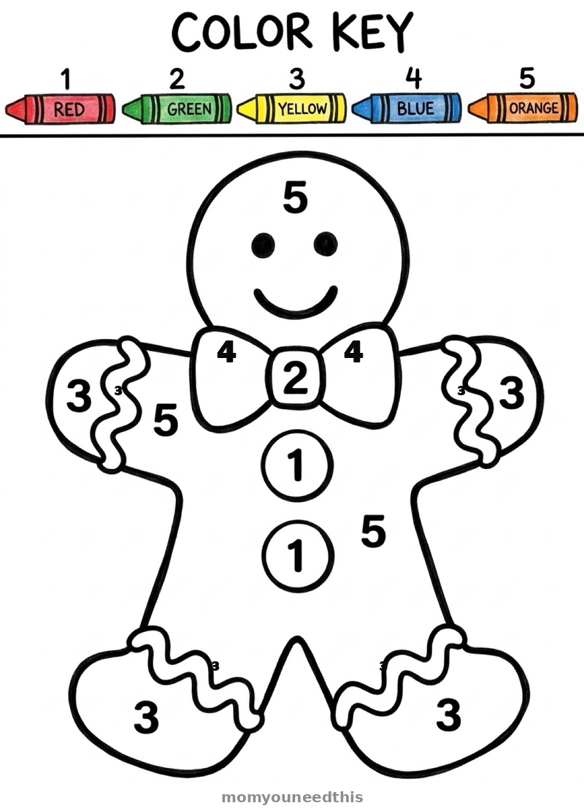
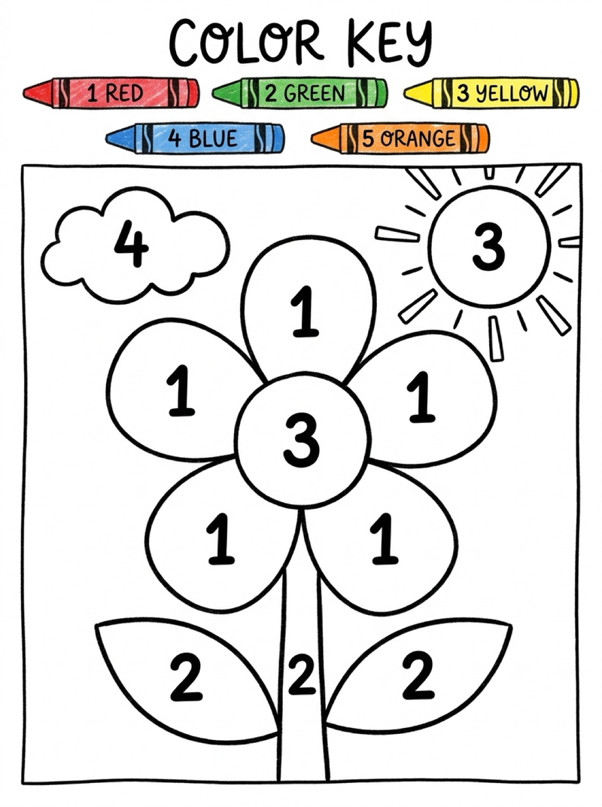
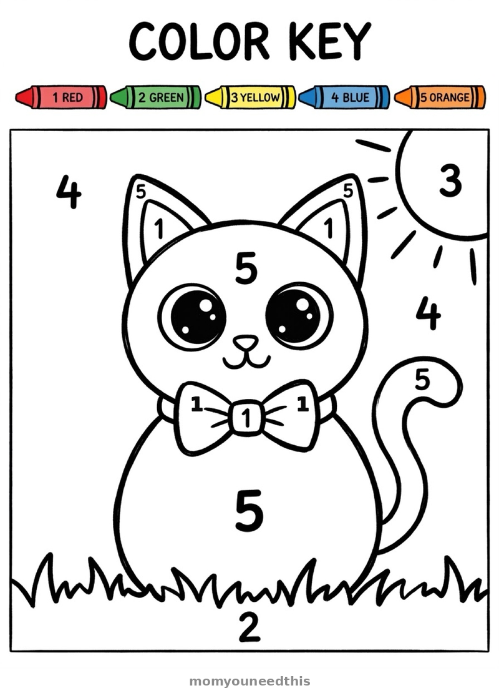

What Are the Easiest Paint by Numbers Printables for Kids? 8 Free Color-by-Number Sheets, Ages 3+
Quick Answer
These paint by numbers printables for kids are made extra easy: big numbered sections, large clear numbers, and only 5 colors on one shared color key. Pick a sheet, print it, and hand your child 5 crayons — match each number to its color and the picture fills itself in. Free, no signup, made for ages 3 and up.
At a Glance
- Activity: Paint by numbers (color by numbers) printables
- Ages: 3+
- Colors per sheet: 5 (same key on every sheet)
- Sections: Extra-large, numbered 1–5
- Supplies: Printed sheet + 5 crayons
- Time: ~15 min per sheet
🎨 Why Paint by Numbers Works for Little Kids
A matching game disguised as a craft — no drawing required, just number + color + scribble.
Paint by numbers for kids works because it removes the hardest part of coloring — deciding what to draw — and replaces it with the part preschoolers love: a matching game. Each sheet on this page is a simple picture split into big numbered sections. The child finds the number, checks the color key, picks up that crayon, and fills the section. Number, color, scribble, done. The picture reveals itself one section at a time, which is why even a 3-year-old's finished sheet genuinely looks like a snowman or a flower instead of a brown blob.
These sheets are designed deliberately easy. Adult paint-by-numbers kits have hundreds of tiny sections; kids' versions from most sites still pack in 10+ colors and cramped areas that a preschooler's hand can't stay inside. Every sheet here follows three rules: very big sections so staying in the lines is actually possible, only 5 colors so the crayon box never gets overwhelming, and one shared color key across all 8 sheets so kids learn the numbers once and reuse them on every picture. 1 is always red, 2 is always green, 3 is always yellow, 4 is always blue, 5 is always orange.
The Christmas sheets are the seasonal stars — the Christmas tree, Santa, reindeer, snowman, ornament, and gingerbread man arrive just in time for December crafting, and they're simple enough to finish before a preschooler's attention runs out. The flower and cat round out the set for year-round coloring. Every sheet is free, printable, and needs nothing but 5 crayons. No paint, no mess, no signup.
The numbers 1–5 do real learning work while your child colors. Matching the number in a section to the number on the key practices number recognition every single section; naming the color out loud before coloring practices color words; staying inside the big-but-bounded sections builds the hand control kids need for writing later. It's a worksheet disguised as a craft — and because the finished picture always looks right, kids actually want to do another one.
🎨 The Color Key (Same on Every Sheet)
One key for all 8 sheets — kids memorize it once and never re-check a different legend. Match the number in each section to the color below.
| Number | Color | What it colors |
|---|---|---|
| 1 | Red | Santa's suit, ornament bands, flower petals, cat inner ears |
| 2 | Green | Christmas tree, reindeer antlers, flower stems and leaves, cat grass |
| 3 | Yellow | Tree star, ornament middle band, flower centers, cat sun |
| 4 | Blue | Snowman scarf, ornament cap, snowman snowflakes, cat sky |
| 5 | Orange | Gingerbread cookie, snowman carrot nose, tree trunk, reindeer body |
🖍️ How to Use These Paint by Numbers Sheets
You need a printed sheet and 5 crayons in the key's colors. Here's the routine that works best with ages 3 and up:
- Set out only the 5 crayons. Red, green, yellow, blue, orange. Fewer choices means less overwhelm and faster starts — especially for toddlers.
- Point at the key together. "1 is red" — have them find a section with a 1 and hold the red crayon over it before coloring. That one demo section teaches the whole game.
- Let them work in any order. Some kids color all the 1s first; some go section by section. Both are correct. The rule is just: number matches color.
- Don't correct the coloring-in. Going outside the lines is fine at this age — the big sections mean even wobbly coloring still reads as the picture.
- Say the numbers and colors out loud. "That's a 4 — blue!" turns each section into a tiny number-and-color quiz without it feeling like one.
Each sheet takes about 15 minutes, which is the sweet spot for a preschool attention span: long enough to feel like a real project, short enough to finish before dinner.
Pick a Paint by Numbers Sheet








🧠 Why Paint by Numbers Works for Ages 3+
Free coloring asks a young child to do three hard things at once: imagine a picture, plan how to make it, and control the crayon. Paint by numbers for kids removes the first two and keeps the fun third. The picture is already there; the child's job is purely to match and fill. That matching is exactly the skill preschoolers are building anyway — numbers 1 to 5, five color names, and the idea that symbols (numbers) stand for things (colors).
The shared color key matters more than it looks. If every sheet used a different legend, a 3-year-old would have to re-learn the rules on every picture. With 1 always red and 4 always blue, the first sheet teaches the game and sheets two through eight are pure play. It also means siblings can share one set of 5 crayons across different sheets without negotiating.
Finally, these sheets always succeed. A child who "can't draw" yet can still finish a paint by numbers sheet that looks like a real snowman — and that success is what builds the confidence to try the harder stuff later, like the step-by-step drawing tutorials on this site.
❓ Paint by Numbers FAQs
What is paint by numbers for kids?
Paint by numbers for kids is a coloring activity where each section of a picture is marked with a number, and each number matches one color on a key. The child finds the number, picks the matching crayon, and colors that section. It's simpler than free coloring because the picture is already drawn — the child only has to match numbers to colors.
What age can kids do paint by numbers?
Most kids can start paint by numbers around age 3, as long as the sheets are designed for them: very big sections, large clear numbers, and only 4 to 6 colors. The sheets on this page use 5 colors and extra-large numbered areas, so preschoolers can join in without frustration.
Is paint by numbers good for toddlers and preschoolers?
Yes — kid-sized paint by numbers builds number recognition (matching 1 to red, 2 to green), color naming, and fine motor control, all while keeping little hands inside big, forgiving shapes. Because there's no wrong picture to draw, it's one of the few art activities where a 3-year-old's finished sheet genuinely looks like the thing.
Do I need paint, or can kids use crayons?
Crayons or markers work perfectly — the 'paint' in paint by numbers just means filling sections with color. Crayons are the better pick for ages 3 and up: no setup, no cleanup, no wet pages, and the sheets on this page were designed with crayon-sized sections.
Are these paint by numbers printables really free?
Yes — all 8 sheets on this page are completely free for personal use, with no signup or email required. Open a sheet, print it, and hand your child 5 crayons. That's the whole activity.